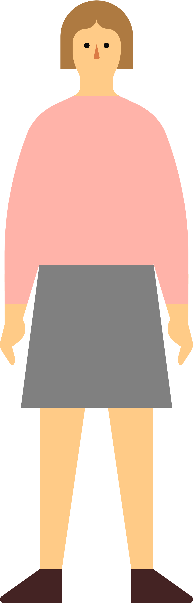
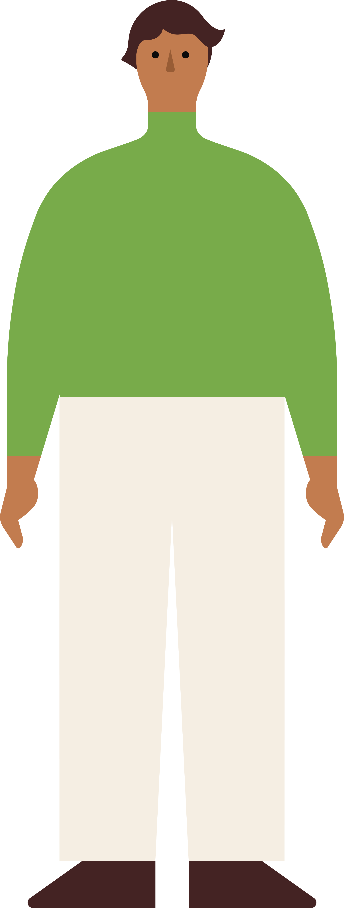
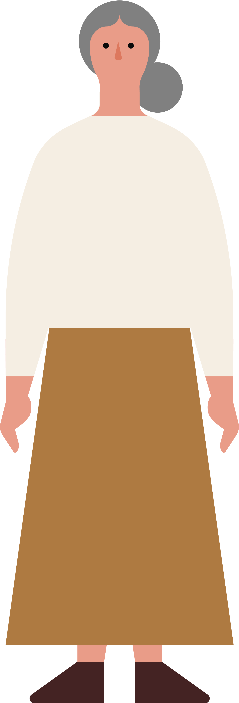
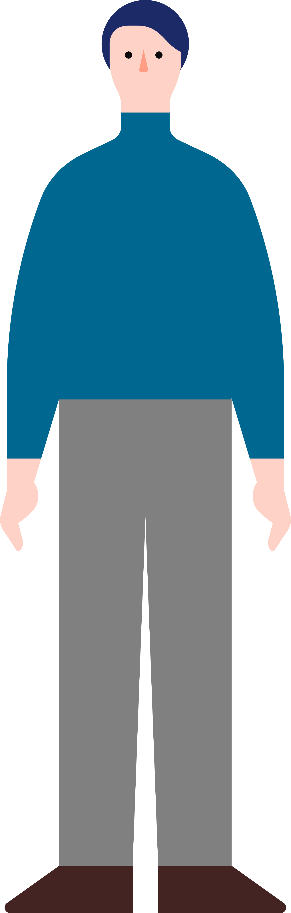
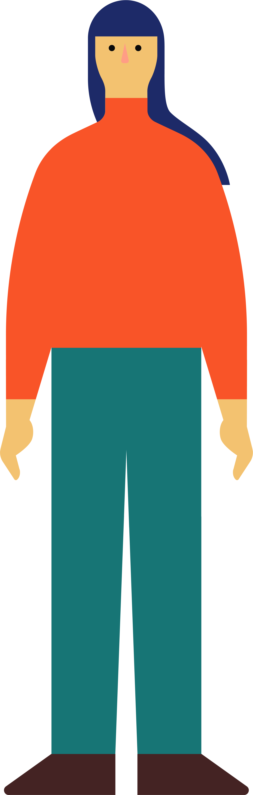

AI導入率と利用分野
AIの導入率は2割を超え、情報通信業や総務・管理部門を中心に導入が進んでいます。導入済み企業では、特に「生成AI」の活用が進んでいます。
中小企業基盤整備機構が公表した実態調査に基づき、AI等の普及状況や導入目的、費用・事例に関する情報ニーズを直感的に把握できるようまとめたダッシュボードです。
AIの導入率は2割を超え、情報通信業や総務・管理部門を中心に導入が進んでいます。導入済み企業では、特に「生成AI」の活用が進んでいます。
AIの導入目的は「業務効率化／作業時間の短縮」が8割を超え最多です。加えて、増収企業では「品質向上」も重視される傾向にあります。
AIの導入効果は「業務効率化／作業時間の短縮」が突出して評価されています。また、「付加価値創出」では従来のIT活用より高い評価を得ています。
AIへの社内理解は一定程度ある一方、必要な情報には不足が見られます。費用助成とともに「導入事例」「活用事例」などの情報ニーズも高くなっています。
技術区分やキーワードを選ぶと、関連する調査結果だけを表示できます。
例：導入目的、生成AI、情報不足
選択した業種を、この一覧表に表示します。
| 業種区分 | 配布数 | 有効回収数 | 有効回収率 |
|---|---|---|---|
| 建設業 | 1,360 | 249社 | 18.3% |
| 製造業 | 1,074 | 197社 | 18.3% |
| 情報通信業 | 176 | 33社 | 18.8% |
| 運輸業 | 208 | 31社 | 14.9% |
| 卸売業 | 648 | 124社 | 19.1% |
| 小売業 | 1,684 | 259社 | 15.4% |
| 不動産業、物品賃貸業 | 1,036 | 159社 | 15.3% |
| 学術研究、専門・技術サービス業 | 650 | 135社 | 20.8% |
| 宿泊業、飲食サービス業 | 1,358 | 170社 | 12.5% |
| 生活関連サービス業、娯楽業 | 1,058 | 176社 | 16.6% |
| 教育、学習支援業 | 302 | 61社 | 20.2% |
| その他 | 446 | 74社 | 16.6% |
| 合計 | 10,000 | 1,668社 | 16.7% |

全国の中小企業10,000社を対象としたWebアンケート調査により、12業種にわたる1,668社（有効回収率16.7％）の実態データを収集しました。製造業（回収率18.3%）や建設業（18.3%）、小売業（15.4%）をはじめ多様な業種から有効回答を得ており、業界ごとの偏りを抑えて実態を把握できます。なお本調査における「AI」は画像認識・音声認識・生成AIなどの先端技術、「IT」はRPAなどの業務効率化ツールとして区分・分析を行っています。
出典：調査結果のポイント 図表1
導入済み20.4%に検討中18.6%を加えると、39.0%がAI導入に前向きです。
※複数回答のため構成比ではなく、各サービスの利用企業割合を表す集合横棒で視覚化しています。

中小企業のAI導入率は20.4％（全社導入3.6％・一部業務導入16.8％）にとどまるものの、検討中（18.6％）を加えると約4割（39.0％）が導入に前向きな姿勢を示しています。導入部門はバックオフィスである「総務・管理部門」（68.3％）が突出しており、「営業・販売・サービス」（60.3％）や「経営・企画」（58.5％）でも積極活用されています。導入サービスでは「生成AI」が82.6％と圧倒的で、2位の「音声認識・音声対話AI」（29.8％）に大差をつけて中小企業の標準ツールとして普及が進んでいます。
出典：調査結果のポイント 図表2〜4
| 売上推移区分 | 母数 | 業務効率化 | 品質向上 | 人手不足 | 付加価値 | エラー軽減 | 売上拡大 | コスト削減 | その他 |
|---|---|---|---|---|---|---|---|---|---|
| 全体 | 331 | 288 (87.0%) | 107 (32.3%) | 105 (31.7%) | 81 (24.5%) | 80 (24.2%) | 73 (22.1%) | 49 (14.8%) | 9 (2.7%) |
| 増収傾向 | 127 | 116 (91.3%) | 49 (38.6%) | 45 (35.4%) | 39 (30.7%) | 31 (24.4%) | 33 (26.0%) | 19 (15.0%) | 2 (1.6%) |
| 横ばい傾向 | 131 | 109 (83.2%) | 38 (29.0%) | 42 (32.1%) | 26 (19.8%) | 32 (24.4%) | 24 (18.3%) | 19 (14.5%) | 6 (4.6%) |
| 減収傾向 | 72 | 62 (86.1%) | 19 (26.4%) | 17 (23.6%) | 15 (20.8%) | 16 (22.2%) | 15 (20.8%) | 10 (13.9%) | 1 (1.4%) |
※増収傾向の企業では「品質向上」が38.6％（青枠ハイライト）で、全体（32.3％）を6.3ポイント上回ります。

AIを導入する最大の目的は「業務効率化／作業時間の短縮」が87.0％で群を抜いており、2位の「品質向上」（32.3％）に50ポイント以上の大差をつけています。一方で直近3年間の業績推移別に分析すると、増収傾向にある企業では「品質向上」を目的とする割合が38.6％に達し、横ばい企業（29.0％）や減収企業（26.4％）に比べて明らかに品質への投資意識が高いことが分かります。
出典：調査結果のポイント 図表5・6

AI導入により実感された効果は「業務効率化／作業時間の短縮」（83.2％）が最も高く、「人手不足対応」（33.9％）や「品質向上」（30.6％）が続いています。従来のIT導入効果と比較すると、「付加価値の創出」においてAI（22.3％）がIT（7.4％）を約15ポイントも上回る結果となりました。定型作業の省力化にとどまらず、新しいサービスや提供価値を生み出す手段としてAIが高く評価されています。
出典：調査結果のポイント 図表7
※理解あり計：45.1%／製品選定情報の不足計：79.8%／活用事例情報の不足計：83.3%
※全5項目で「必要である」が約6割〜8割。費用助成（77.9%）に次いで事例提供（70.5%）の需要が高くなっています。

社内でAI・ITの必要性を理解している企業は45.1％あるものの、情報不足の課題は深刻で、「成功事例・活用事例の情報」が不足している企業は83.3％、「適切なベンダー・製品を選ぶ情報」の不足も79.8％に上ります。求められる公的支援策としても、「導入費用などの助成」（77.9％）に次いで「導入事例などの情報提供」（70.5％）や「研修・教育」（67.7％）のニーズが極めて高く、資金支援と並ぶ実践的な知見・事例の提供が不可欠となっています。
出典：調査結果のポイント 図表8・9